那不勒斯风味 Neapolitan
共 215 个条目 · neapolitan
版本: 6.0.1 · 来源: neapolitan-1.21.1-6.0.1.jar
Adds new flavors and fruits to create tasty Ice Creams, Milkshakes, Cakes, and more!
MC百科中文名: 那不勒斯风味
MC百科页面: https://www.mcmod.cn/class/3212.html（那不勒斯风味 (Neapolitan)）
官方介绍 （Modrinth · 中文版由 GLM AI 翻译，仅供参考）
📖 关于：
Neapolitan（那不勒斯风味）是一个思路与众不同的食物模组。它不堆砌数值，而是让每种食物都拥有独特的用途，各得其所。Neapolitan 的食物大致按"风味"划分，每种风味都需要去探索世界，而不只是照方抓药地合成。每种风味都配有冰淇淋、蛋糕和奶昔，计划中的九种风味已实现六种：香草、巧克力、草莓、香蕉、薄荷和红豆（Adzuki）。后续还会加入泡泡糖、肉桂和芒果。此外，本模组还调整了曲奇，让它吃起来更快。
由 GLM AI 翻译，仅供参考
查看英文原文（Modrinth）
📖 About:
Neapolitan is a food mod with a different approach. Rather than raw stats, Neapolitan's foods do things to give them each a niche. Neapolitan food is sort of divided by flavors, which all involve exploring the world rather than purely crafting recipes. Each flavor comes with ice cream, cake, and a milkshake, with six of the planned nine implemented. The current flavors are Vanilla, Chocolate, Strawberries, Bananas, Mint, and Adzuki. Bubblegum, Cinnamon, and Mango are to follow. In addition, the mod tweaks cookies, so they're eaten faster.
资料来源：Neapolitan
物品与方块
 红豆
红豆neapolitan:adzuki_beans · 物品
 红豆沙包
红豆沙包neapolitan:adzuki_bun · 物品
 红豆蛋糕
红豆蛋糕neapolitan:adzuki_cake · 方块
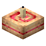
带蜡烛的红豆蛋糕neapolitan:adzuki_candle_cake · 方块
 箱装红豆
箱装红豆neapolitan:adzuki_crate · 方块
 红豆咖喱
红豆咖喱neapolitan:adzuki_curry · 物品
 红豆冰激凌
红豆冰激凌neapolitan:adzuki_ice_cream · 物品
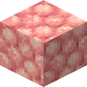
红豆冰激凌块neapolitan:adzuki_ice_cream_block · 方块
 红豆奶昔
红豆奶昔neapolitan:adzuki_milkshake · 物品
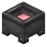
红豆奶昔炼药锅neapolitan:adzuki_milkshake_cauldron · 方块
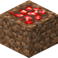
红豆泥土neapolitan:adzuki_soil · 方块红豆苗
neapolitan:adzuki_sprouts · 方块
 红豆煲
红豆煲neapolitan:adzuki_stew · 物品
 香蕉
香蕉neapolitan:banana · 物品
 香蕉面包
香蕉面包neapolitan:banana_bread · 物品
 香蕉串
香蕉串neapolitan:banana_bunch · 物品
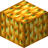
香蕉捆neapolitan:banana_bundle · 方块
 香蕉蛋糕
香蕉蛋糕neapolitan:banana_cake · 方块
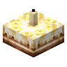
带蜡烛的香蕉蛋糕neapolitan:banana_candle_cake · 方块
 箱装香蕉
箱装香蕉neapolitan:banana_crate · 方块
 香蕉叶
香蕉叶neapolitan:banana_frond · 方块
 香蕉冰激凌
香蕉冰激凌neapolitan:banana_ice_cream · 物品
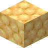
香蕉冰激凌块neapolitan:banana_ice_cream_block · 方块
 香蕉奶昔
香蕉奶昔neapolitan:banana_milkshake · 物品
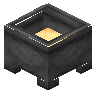
香蕉奶昔炼药锅neapolitan:banana_milkshake_cauldron · 方块
 香蕉梗
香蕉梗neapolitan:banana_stalk · 方块
 香蕉箭
香蕉箭neapolitan:bananarrow · 物品
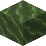
豆梗neapolitan:beanstalk · 方块
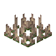
豆梗荆棘neapolitan:beanstalk_thorns · 方块带黑色蜡烛的红豆蛋糕
neapolitan:black_adzuki_candle_cake · 方块
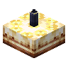
带黑色蜡烛的香蕉蛋糕neapolitan:black_banana_candle_cake · 方块
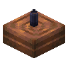
带黑色蜡烛的巧克力蛋糕neapolitan:black_chocolate_candle_cake · 方块带黑色蜡烛的薄荷蛋糕
neapolitan:black_mint_candle_cake · 方块
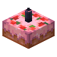
带黑色蜡烛的草莓蛋糕neapolitan:black_strawberry_candle_cake · 方块
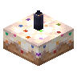
带黑色蜡烛的香草蛋糕neapolitan:black_vanilla_candle_cake · 方块带蓝色蜡烛的红豆蛋糕
neapolitan:blue_adzuki_candle_cake · 方块
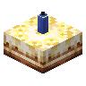
带蓝色蜡烛的香蕉蛋糕neapolitan:blue_banana_candle_cake · 方块
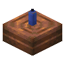
带蓝色蜡烛的巧克力蛋糕neapolitan:blue_chocolate_candle_cake · 方块带蓝色蜡烛的薄荷蛋糕
neapolitan:blue_mint_candle_cake · 方块带蓝色蜡烛的草莓蛋糕
neapolitan:blue_strawberry_candle_cake · 方块
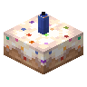
带蓝色蜡烛的香草蛋糕neapolitan:blue_vanilla_candle_cake · 方块
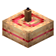
带棕色蜡烛的红豆蛋糕neapolitan:brown_adzuki_candle_cake · 方块
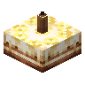
带棕色蜡烛的香蕉蛋糕neapolitan:brown_banana_candle_cake · 方块
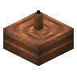
带棕色蜡烛的巧克力蛋糕neapolitan:brown_chocolate_candle_cake · 方块带棕色蜡烛的薄荷蛋糕
neapolitan:brown_mint_candle_cake · 方块
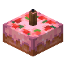
带棕色蜡烛的草莓蛋糕neapolitan:brown_strawberry_candle_cake · 方块
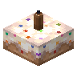
带棕色蜡烛的香草蛋糕neapolitan:brown_vanilla_candle_cake · 方块
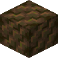
雕刻过的香蕉梗neapolitan:carved_banana_stalk · 方块
 旗帜图案
旗帜图案neapolitan:chimpanzee_banner_pattern · 物品
 猴子头颅
猴子头颅neapolitan:chimpanzee_head · 方块
 猴子刷怪蛋
猴子刷怪蛋neapolitan:chimpanzee_spawn_egg · 物品
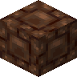
錾制巧克力砖neapolitan:chiseled_chocolate_bricks · 方块
 巧克力条
巧克力条neapolitan:chocolate_bar · 物品
 巧克力块
巧克力块neapolitan:chocolate_block · 方块
 巧克力砖台阶
巧克力砖台阶neapolitan:chocolate_brick_slab · 方块
巧克力砖楼梯neapolitan:chocolate_brick_stairs · 方块
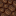
巧克力砖墙neapolitan:chocolate_brick_wall · 方块
巧克力砖neapolitan:chocolate_bricks · 方块
 巧克力蛋糕
巧克力蛋糕neapolitan:chocolate_cake · 方块
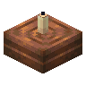
带蜡烛的巧克力蛋糕neapolitan:chocolate_candle_cake · 方块
 巧克力冰激凌
巧克力冰激凌neapolitan:chocolate_ice_cream · 物品
 巧克力冰激凌块
巧克力冰激凌块neapolitan:chocolate_ice_cream_block · 方块
 巧克力奶昔
巧克力奶昔neapolitan:chocolate_milkshake · 物品
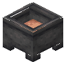
巧克力奶昔炼药锅neapolitan:chocolate_milkshake_cauldron · 方块
 巧克力蜘蛛眼
巧克力蜘蛛眼neapolitan:chocolate_spider_eye · 物品
 巧克力草莓
巧克力草莓neapolitan:chocolate_strawberries · 物品
 巧克力瓦台阶
巧克力瓦台阶neapolitan:chocolate_tile_slab · 方块
巧克力瓦楼梯neapolitan:chocolate_tile_stairs · 方块巧克力瓦墙
neapolitan:chocolate_tile_wall · 方块
巧克力瓦neapolitan:chocolate_tiles · 方块
 熟薄荷肉排
熟薄荷肉排neapolitan:cooked_mint_chops · 物品
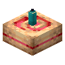
带青色蜡烛的红豆蛋糕neapolitan:cyan_adzuki_candle_cake · 方块
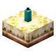
带青色蜡烛的香蕉蛋糕neapolitan:cyan_banana_candle_cake · 方块
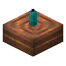
带青色蜡烛的巧克力蛋糕neapolitan:cyan_chocolate_candle_cake · 方块
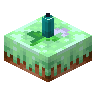
带青色蜡烛的薄荷蛋糕neapolitan:cyan_mint_candle_cake · 方块
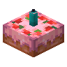
带青色蜡烛的草莓蛋糕neapolitan:cyan_strawberry_candle_cake · 方块
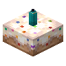
带青色蜡烛的香草蛋糕neapolitan:cyan_vanilla_candle_cake · 方块
 香蕉干
香蕉干neapolitan:dried_banana · 物品
 香草荚干块
香草荚干块neapolitan:dried_vanilla_pod_block · 方块
 香草荚干
香草荚干neapolitan:dried_vanilla_pods · 物品
 香蕉叶茅草块
香蕉叶茅草块neapolitan:frond_thatch · 方块
 香蕉叶茅草块台阶
香蕉叶茅草块台阶neapolitan:frond_thatch_slab · 方块
 香蕉叶茅草块楼梯
香蕉叶茅草块楼梯neapolitan:frond_thatch_stairs · 方块
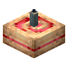
带灰色蜡烛的红豆蛋糕neapolitan:gray_adzuki_candle_cake · 方块
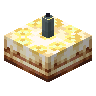
带灰色蜡烛的香蕉蛋糕neapolitan:gray_banana_candle_cake · 方块
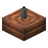
带灰色蜡烛的巧克力蛋糕neapolitan:gray_chocolate_candle_cake · 方块
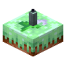
带灰色蜡烛的薄荷蛋糕neapolitan:gray_mint_candle_cake · 方块
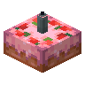
带灰色蜡烛的草莓蛋糕neapolitan:gray_strawberry_candle_cake · 方块
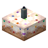
带灰色蜡烛的香草蛋糕neapolitan:gray_vanilla_candle_cake · 方块
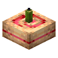
带绿色蜡烛的红豆蛋糕neapolitan:green_adzuki_candle_cake · 方块
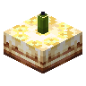
带绿色蜡烛的香蕉蛋糕neapolitan:green_banana_candle_cake · 方块
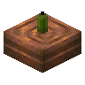
带绿色蜡烛的巧克力蛋糕neapolitan:green_chocolate_candle_cake · 方块
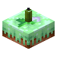
带绿色蜡烛的薄荷蛋糕neapolitan:green_mint_candle_cake · 方块
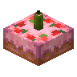
带绿色蜡烛的草莓蛋糕neapolitan:green_strawberry_candle_cake · 方块
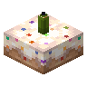
带绿色蜡烛的香草蛋糕neapolitan:green_vanilla_candle_cake · 方块
 小冰块
小冰块neapolitan:ice_cubes · 物品大型香蕉叶
neapolitan:large_banana_frond · 方块带淡蓝色蜡烛的红豆蛋糕
neapolitan:light_blue_adzuki_candle_cake · 方块
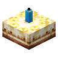
带淡蓝色蜡烛的香蕉蛋糕neapolitan:light_blue_banana_candle_cake · 方块
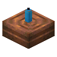
带淡蓝色蜡烛的巧克力蛋糕neapolitan:light_blue_chocolate_candle_cake · 方块带淡蓝色蜡烛的薄荷蛋糕
neapolitan:light_blue_mint_candle_cake · 方块
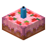
带淡蓝色蜡烛的草莓蛋糕neapolitan:light_blue_strawberry_candle_cake · 方块
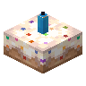
带淡蓝色蜡烛的香草蛋糕neapolitan:light_blue_vanilla_candle_cake · 方块
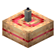
带淡灰色蜡烛的红豆蛋糕neapolitan:light_gray_adzuki_candle_cake · 方块带淡灰色蜡烛的香蕉蛋糕
neapolitan:light_gray_banana_candle_cake · 方块带淡灰色蜡烛的巧克力蛋糕
neapolitan:light_gray_chocolate_candle_cake · 方块带淡灰色蜡烛的薄荷蛋糕
neapolitan:light_gray_mint_candle_cake · 方块带淡灰色蜡烛的草莓蛋糕
neapolitan:light_gray_strawberry_candle_cake · 方块带淡灰色蜡烛的香草蛋糕
neapolitan:light_gray_vanilla_candle_cake · 方块带黄绿色蜡烛的红豆蛋糕
neapolitan:lime_adzuki_candle_cake · 方块带黄绿色蜡烛的香蕉蛋糕
neapolitan:lime_banana_candle_cake · 方块带黄绿色蜡烛的巧克力蛋糕
neapolitan:lime_chocolate_candle_cake · 方块带黄绿色蜡烛的薄荷蛋糕
neapolitan:lime_mint_candle_cake · 方块带黄绿色蜡烛的草莓蛋糕
neapolitan:lime_strawberry_candle_cake · 方块带黄绿色蜡烛的香草蛋糕
neapolitan:lime_vanilla_candle_cake · 方块带品红色蜡烛的红豆蛋糕
neapolitan:magenta_adzuki_candle_cake · 方块带品红色蜡烛的香蕉蛋糕
neapolitan:magenta_banana_candle_cake · 方块带品红色蜡烛的巧克力蛋糕
neapolitan:magenta_chocolate_candle_cake · 方块带品红色蜡烛的薄荷蛋糕
neapolitan:magenta_mint_candle_cake · 方块带品红色蜡烛的草莓蛋糕
neapolitan:magenta_strawberry_candle_cake · 方块带品红色蜡烛的香草蛋糕
neapolitan:magenta_vanilla_candle_cake · 方块魔豆
neapolitan:magic_beans · 方块
 奶瓶
奶瓶neapolitan:milk_bottle · 物品奶炼药锅
neapolitan:milk_cauldron · 方块薄荷
neapolitan:mint · 方块
 箱装薄荷
箱装薄荷neapolitan:mint_basket · 方块
 薄荷蛋糕
薄荷蛋糕neapolitan:mint_cake · 方块
 薄荷糖
薄荷糖neapolitan:mint_candies · 物品带蜡烛的薄荷蛋糕
neapolitan:mint_candle_cake · 方块
 薄荷巧克力
薄荷巧克力neapolitan:mint_chocolate · 物品
 生薄荷肉排
生薄荷肉排neapolitan:mint_chops · 物品
 薄荷冰激凌
薄荷冰激凌neapolitan:mint_ice_cream · 物品薄荷冰激凌块
neapolitan:mint_ice_cream_block · 方块
 薄荷叶
薄荷叶neapolitan:mint_leaves · 物品
 薄荷奶昔
薄荷奶昔neapolitan:mint_milkshake · 物品薄荷奶昔炼药锅
neapolitan:mint_milkshake_cauldron · 方块薄荷苗
neapolitan:mint_sprout · 物品
 音乐唱片
音乐唱片neapolitan:music_disc_hullabaloo · 物品
 那不勒斯风味冰激凌
那不勒斯风味冰激凌neapolitan:neapolitan_ice_cream · 物品带橙色蜡烛的红豆蛋糕
neapolitan:orange_adzuki_candle_cake · 方块带橙色蜡烛的香蕉蛋糕
neapolitan:orange_banana_candle_cake · 方块带橙色蜡烛的巧克力蛋糕
neapolitan:orange_chocolate_candle_cake · 方块带橙色蜡烛的薄荷蛋糕
neapolitan:orange_mint_candle_cake · 方块带橙色蜡烛的草莓蛋糕
neapolitan:orange_strawberry_candle_cake · 方块带橙色蜡烛的香草蛋糕
neapolitan:orange_vanilla_candle_cake · 方块带粉色蜡烛的红豆蛋糕
neapolitan:pink_adzuki_candle_cake · 方块带粉色蜡烛的香蕉蛋糕
neapolitan:pink_banana_candle_cake · 方块带粉色蜡烛的巧克力蛋糕
neapolitan:pink_chocolate_candle_cake · 方块带粉色蜡烛的薄荷蛋糕
neapolitan:pink_mint_candle_cake · 方块带粉色蜡烛的草莓蛋糕
neapolitan:pink_strawberry_candle_cake · 方块带粉色蜡烛的香草蛋糕
neapolitan:pink_vanilla_candle_cake · 方块
芭蕉蜘蛛刷怪蛋neapolitan:plantain_spider_spawn_egg · 物品盆栽香蕉叶
neapolitan:potted_banana_frond · 方块
 盆栽薄荷
盆栽薄荷neapolitan:potted_mint · 方块
盆栽香草荚neapolitan:potted_vanilla_vine · 方块
 Smithing Template
Smithing Templateneapolitan:primal_armor_trim_smithing_template · 物品带紫色蜡烛的红豆蛋糕
neapolitan:purple_adzuki_candle_cake · 方块带紫色蜡烛的香蕉蛋糕
neapolitan:purple_banana_candle_cake · 方块带紫色蜡烛的巧克力蛋糕
neapolitan:purple_chocolate_candle_cake · 方块带紫色蜡烛的薄荷蛋糕
neapolitan:purple_mint_candle_cake · 方块带紫色蜡烛的草莓蛋糕
neapolitan:purple_strawberry_candle_cake · 方块带紫色蜡烛的香草蛋糕
neapolitan:purple_vanilla_candle_cake · 方块带红色蜡烛的红豆蛋糕
neapolitan:red_adzuki_candle_cake · 方块带红色蜡烛的香蕉蛋糕
neapolitan:red_banana_candle_cake · 方块带红色蜡烛的巧克力蛋糕
neapolitan:red_chocolate_candle_cake · 方块带红色蜡烛的薄荷蛋糕
neapolitan:red_mint_candle_cake · 方块带红色蜡烛的草莓蛋糕
neapolitan:red_strawberry_candle_cake · 方块带红色蜡烛的香草蛋糕
neapolitan:red_vanilla_candle_cake · 方块
 反射纹样陶片
反射纹样陶片neapolitan:reflection_pottery_sherd · 物品
 烤红豆
烤红豆neapolitan:roasted_adzuki_beans · 物品
 箱装烤红豆
箱装烤红豆neapolitan:roasted_adzuki_crate · 方块
 尖叫纹样陶片
尖叫纹样陶片neapolitan:scream_pottery_sherd · 物品
 小型香蕉叶
小型香蕉叶neapolitan:small_banana_frond · 方块
 零食纹样陶片
零食纹样陶片neapolitan:snack_pottery_sherd · 物品
 蜘蛛纹样陶片
蜘蛛纹样陶片neapolitan:spider_pottery_sherd · 物品
 草莓
草莓neapolitan:strawberries · 物品
 草莓香蕉冰沙
草莓香蕉冰沙neapolitan:strawberry_banana_smoothie · 物品
 箱装草莓
箱装草莓neapolitan:strawberry_basket · 方块
 草莓红豆夹心糖
草莓红豆夹心糖neapolitan:strawberry_bean_bonbons · 物品?草莓丛
neapolitan:strawberry_bush · 方块
 草莓蛋糕
草莓蛋糕neapolitan:strawberry_cake · 方块带蜡烛的草莓蛋糕
neapolitan:strawberry_candle_cake · 方块
 草莓冰激凌
草莓冰激凌neapolitan:strawberry_ice_cream · 物品
 草莓冰激凌块
草莓冰激凌块neapolitan:strawberry_ice_cream_block · 方块
 草莓奶昔
草莓奶昔neapolitan:strawberry_milkshake · 物品草莓奶昔炼药锅
neapolitan:strawberry_milkshake_cauldron · 方块
 草莓籽
草莓籽neapolitan:strawberry_pips · 物品
 草莓司康饼
草莓司康饼neapolitan:strawberry_scones · 物品
 香草蛋糕
香草蛋糕neapolitan:vanilla_cake · 方块带蜡烛的香草蛋糕
neapolitan:vanilla_candle_cake · 方块
 香草巧克力条
香草巧克力条neapolitan:vanilla_chocolate_fingers · 物品
 香草软糖
香草软糖neapolitan:vanilla_fudge · 物品
 香草冰激凌
香草冰激凌neapolitan:vanilla_ice_cream · 物品香草冰激凌块
neapolitan:vanilla_ice_cream_block · 方块
 香草奶昔
香草奶昔neapolitan:vanilla_milkshake · 物品香草奶昔炼药锅
neapolitan:vanilla_milkshake_cauldron · 方块
 香草荚块
香草荚块neapolitan:vanilla_pod_block · 方块香草荚
neapolitan:vanilla_pods · 物品
 香草补丁
香草补丁neapolitan:vanilla_pudding · 物品香草藤蔓
neapolitan:vanilla_vine · 方块香草藤蔓
neapolitan:vanilla_vine_plant · 方块带白色蜡烛的红豆蛋糕
neapolitan:white_adzuki_candle_cake · 方块带白色蜡烛的香蕉蛋糕
neapolitan:white_banana_candle_cake · 方块带白色蜡烛的巧克力蛋糕
neapolitan:white_chocolate_candle_cake · 方块带白色蜡烛的薄荷蛋糕
neapolitan:white_mint_candle_cake · 方块
 白草莓
白草莓neapolitan:white_strawberries · 物品
 箱装白草莓
箱装白草莓neapolitan:white_strawberry_basket · 方块带白色蜡烛的草莓蛋糕
neapolitan:white_strawberry_candle_cake · 方块带白色蜡烛的香草蛋糕
neapolitan:white_vanilla_candle_cake · 方块带黄色蜡烛的红豆蛋糕
neapolitan:yellow_adzuki_candle_cake · 方块带黄色蜡烛的香蕉蛋糕
neapolitan:yellow_banana_candle_cake · 方块带黄色蜡烛的巧克力蛋糕
neapolitan:yellow_chocolate_candle_cake · 方块带黄色蜡烛的薄荷蛋糕
neapolitan:yellow_mint_candle_cake · 方块带黄色蜡烛的草莓蛋糕
neapolitan:yellow_strawberry_candle_cake · 方块带黄色蜡烛的香草蛋糕
neapolitan:yellow_vanilla_candle_cake · 方块